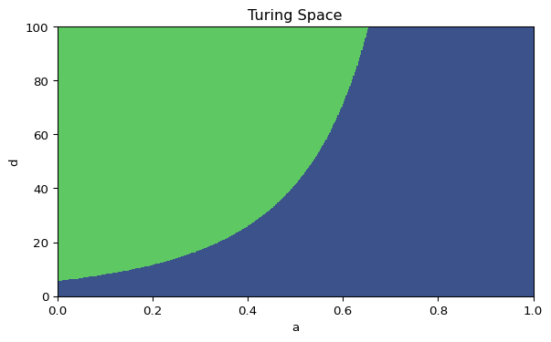

Turing Instability in 2D
Spatial Modes and Pattern Formation
Turing instability predicts when small spatial perturbations grow into patterns. We will check the instability conditions and compute unstable spatial modes on a 2D rectangle.
Conditions
Let the Jacobian at the fixed point be
\[J=\begin{pmatrix} f_u & f_v \\ g_u & g_v \end{pmatrix}.\]
A common set of conditions for Turing instability is:
\[ \begin{aligned} &f_u + g_v < 0, \\ &f_u g_v - f_v g_u > 0, \\ &g_v + d f_u > 2\sqrt{d\,(f_u g_v - f_v g_u)}. \end{aligned} \]
Implement a Turing test
Create a function that returns True if all conditions are satisfied. In the reference script the Jacobian entries are hard-coded at the fixed point.
def giere_meinhardt_jacobian(a=0.40, b=1.00):
# TODO: compute fu, fv, gu, gv at the fixed point
return fu, fv, gu, gv
def is_turing_instability(a, b, d):
fu, fv, gu, gv = giere_meinhardt_jacobian(a, b)
# TODO: implement the three conditions
return cond1 & cond2 & cond3
Hint: Turing instability functions (click to expand)
def giere_meinhardt_jacobian(a=0.40, b=1.00):
fu = 2 * b / (a + 1) - b
fv = -((b / (a + 1)) ** 2)
gu = 2 * (a + 1) / b
gv = -1.0
return fu, fv, gu, gv
def is_turing_instability(a, b, d):
fu, fv, gu, gv = giere_meinhardt_jacobian(a, b)
nabla = fu * gv - fv * gu
cond1 = (fu + gv) < 0
cond2 = nabla > 0
cond3 = (gv + d * fu) > (2 * np.sqrt(d) * np.sqrt(nabla))
return cond1 & cond2 & cond3Unstable spatial modes (2D)
The unstable modes are now pairs \((n_x, n_y)\). The temporal eigenvalues for spatial mode \((\lambda_x, \lambda_y)\) are the eigenvalues of
\[A_n = J - (\lambda_x + \lambda_y)\,\mathrm{diag}(1, d).\]
import numpy as np
def find_unstable_spatial_modes(a=0.40, b=1.00, d=30.0, length_x=20.0, length_y=50.0, num_modes=10):
# TODO: build the Jacobian and scan 2D spatial modes
return unstable_modes
Hint: Spatial mode scan (click to expand)
def find_unstable_spatial_modes(a=0.40, b=1.00, d=30.0, length_x=20.0, length_y=50.0, num_modes=10):
fu, fv, gu, gv = giere_meinhardt_jacobian(a, b)
jac = np.array([[fu, fv], [gu, gv]])
n_values = np.arange(1, num_modes)
max_eigs = np.zeros((num_modes, num_modes))
for x in n_values:
for y in n_values:
lambda_x = (x * np.pi / length_x) ** 2
lambda_y = (y * np.pi / length_y) ** 2
a_n = jac - (lambda_x + lambda_y) * np.diag([1, d])
sigma1, sigma2 = np.linalg.eigvals(a_n)
max_eigs[x, y] = max(sigma1.real, sigma2.real)
idx, idy = np.unravel_index(np.argsort(max_eigs, axis=None), max_eigs.shape)
num_positives = (max_eigs > 0).sum()
idx, idy = idx[-1:-num_positives:-1], idy[-1:-num_positives:-1]
unstable_modes = [(i, j) for i, j in zip(idx, idy)]
return unstable_modesExercises
- Check whether these parameter values lead to Turing instability: \(\gamma=1\), \(a=0.4\), \(b=1\), \(d=30\).
- Repeat for \(\gamma=1\), \(a=0.4\), \(b=1\), \(d=20\).
- Use \(L_1=20\), \(L_2=50\) and report the number of unstable modes and the leading mode for each case.